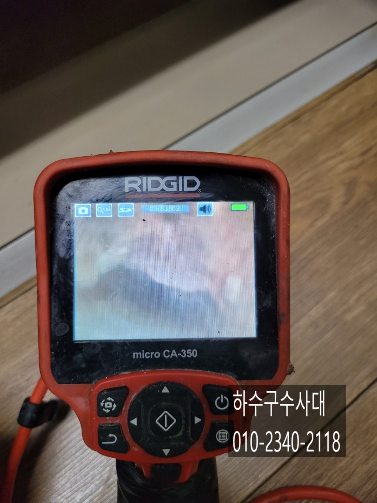
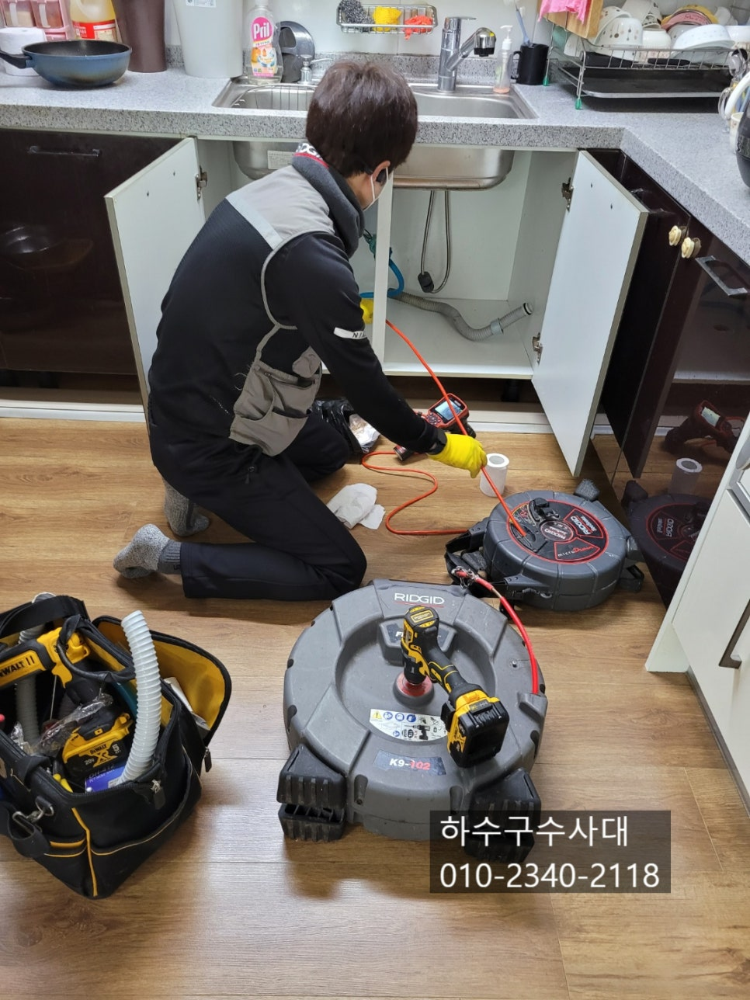
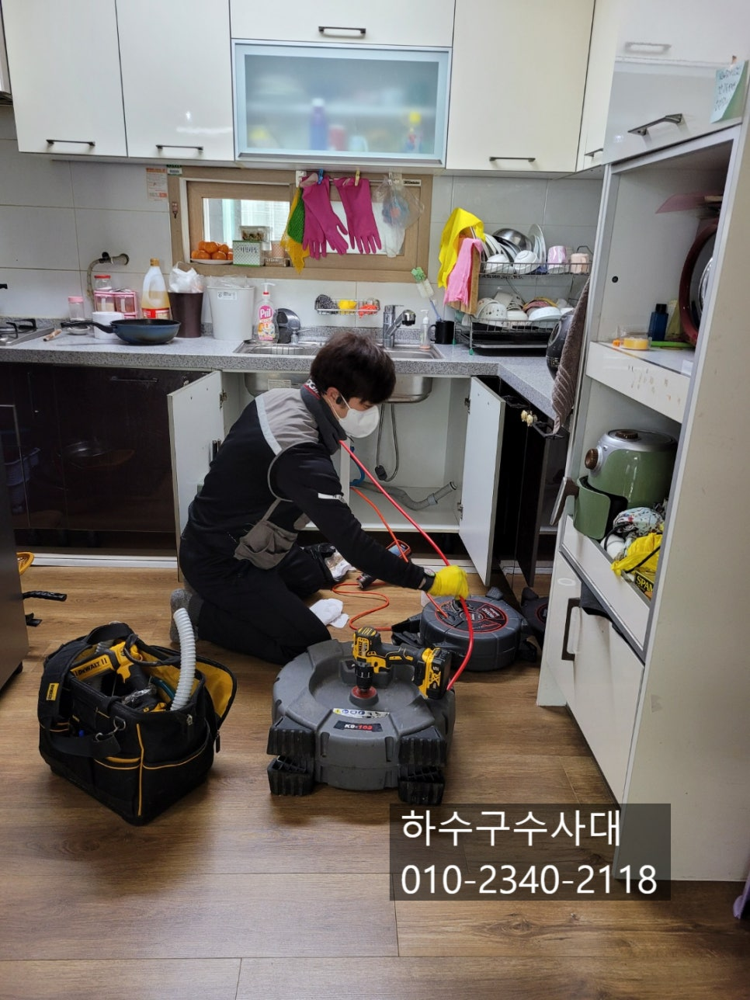
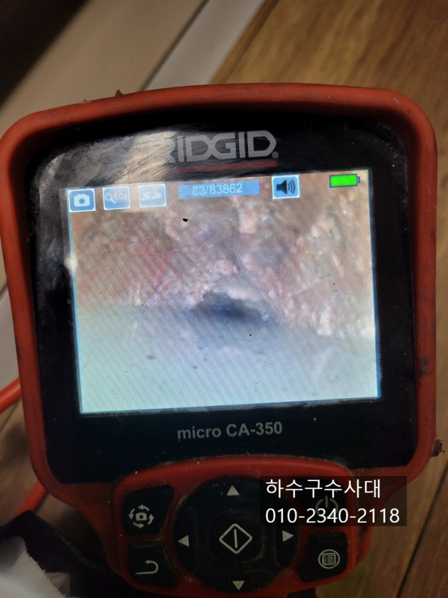
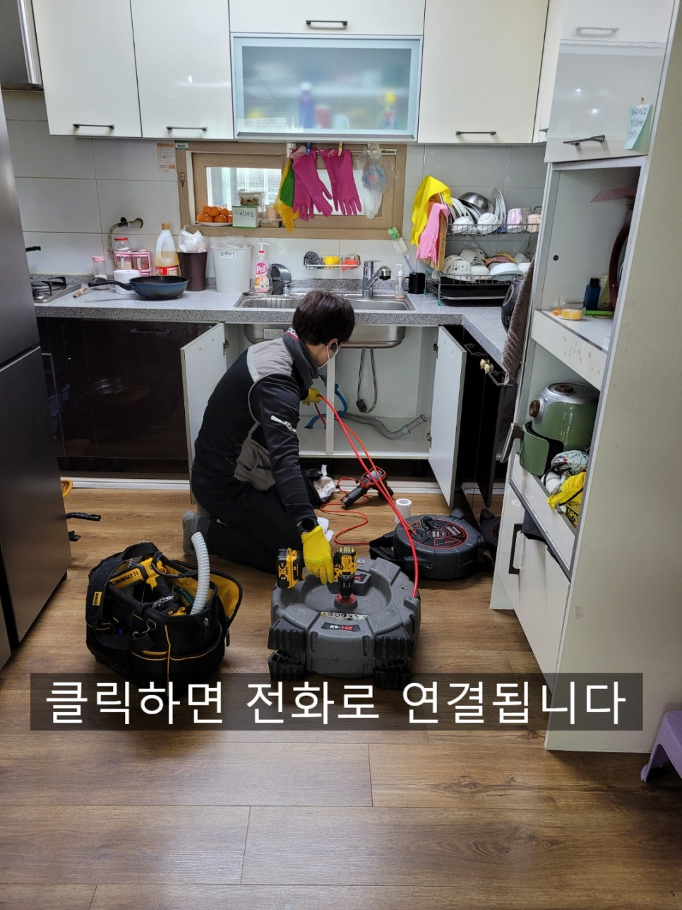
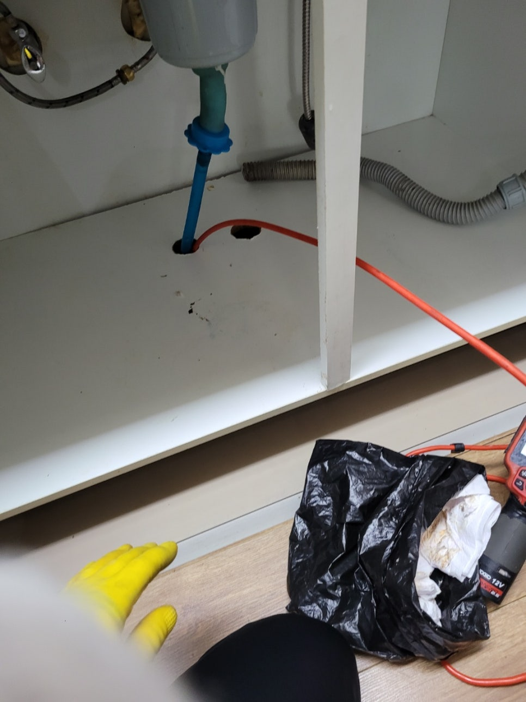
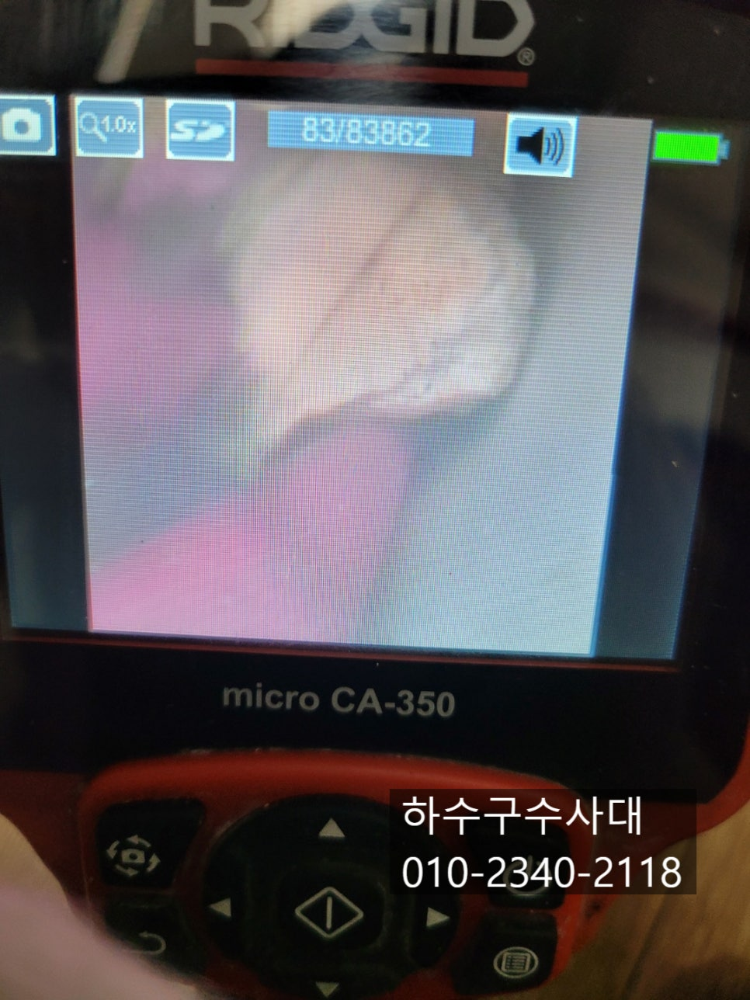

🏠 오산하수구막힘 세마동 대원동 중앙동 오산싱크대막힘
오산 세마동 싱크대막힘 전문 시공 후기

📋 작업 개요
- 위치: 오산 세마동, 세마동, 오산
- 서비스 유형: 싱크대막힘, 하수구막힘, 배관막힘, 집수정막힘, 역류해결, 배관청소, 고압세척
- 작업 일시: 2022. 2. 15. 20:59
- 업체명: 하수구수사대 (010-5615-2118)
🔍 문제 상황
오산하수구막힘 세마동 대원동 중앙동 오산싱크대막힘
안녕하세요
"하수구수사대"입니다.
오늘은 #오산하수구막힘 으로 스트레스를
받고 계신 고객님의 고민을 해결해 드리고 왔습니다.
오늘 방문한 현장은 다세대빌라 1층이였는데요
물을 사용하지 않아도 싱크대하수구에서 물이 역류하여 방안에
물난리가 난적이 있었고 설비업체를 불러 스프링으로
해결을 했다고 하셨어요. 하지만 6개월이 지난후 며칠전부터
하수구에서 심상치 않은 소리가 나기 시작했답니다.
아무래도 하수구에서 역류할 조짐이 보여 근본적인 해결을 위해
"하수구수사대"를 찾아주셨습니다^^
우선 내시경검수를 통해 배관상태부터 체크 해보았는데요
1층이 제일 낮은층으로 윗층에서 사용하는 물이 1층배관을
통해서 배출되고 있답니다. 아파트의경우 통상적으로 1층배관은

🔎 원인 분석
💡 전문가 진단: 하수구수사대010-2340-2118
따로 빼지만 빌라는 저마다 다르답니다.
내시경카메라를 통해 확인해보니 1층 하수구에서 가까운쪽부터
절반이상 기름덩어리가 붙어있는것을 확인할수 있었는데요
아무래도 입구쪽부터 구배가 좋지 않다보니 물에 떠있는 기름이
배관옆과 윗쪽에 조금씩 쌓여 덩어리가 되어 버렸습니다.
배관안에 기름덩어리를 쌓이게 되면 펑크린이나 뚜러펑 같은
세정제로는 제거가 어려운데요 스프링장비도 배관 위쪽에
붙어있는 기름덩어리를 모두 제거하기란 쉽지 않아요.
고압세척기로 배관을 세척하면 좋겠지만 배관구조에 따라
작업방식이 달라진다고 보시면 됩니다.
작업방식을 다르지만 작업후 기름이 모두 제거되었는지
내시경카메라로 확인하는것 같으니 꼭 눈으로 확인하셔야해요.
고압세척기는 고압호스를 배관에 넣어 물을 고압으로 분사시켜
배관에 이물질을 털어내는 장비로 하수구청소에서
가장많이 사용하고 있는 장비인데요 하지만 실내에서 사용하기보단
실외 오수받이나 집수정에서 이물질을 빼내는 방식으로

🔧 작업 과정
많이 사용합니다.
그리고 실내에서는 주로 플렉스샤프트 장비를 사용하는데요
물을 흘려보내면서 배관에 붙어있는 기름덩어리를 체인이
회전을 하면서 제거하는 장비입니다.
물을 틀어놓고 플렉스샤프트로 기름덩어리를 갈아내기때문에
오수받이에서 갈린 기름슬러지들이 흘러나오는것을 볼수 있습니다.
기름덩어리가 나올수도 있기때문에 덩어리는 되도록
건져내 주는게 좋겠죠?^^
하수구수사대
010-2340-2118
기름덩어리는 오랜기간 붙어있게되면 돌처럼 딱딱해지기도 하는데요
이러한 기름덩어리는 장비로도 부숴지지않아 덩어리째 떨어져
나오는 경우도 많답니다.
이렇게 딱딱한 기름덩어리가 배관에서 떨어져 좁아져 있는 배관을
막게되면 역류가 되는 증상이 나타나는 것입니다.
역류를 겪어본 저층세대 입주자분들은 이루말할수 없는
스트레스를 받는데요 밤새 물을 퍼내느라 잠을 못자기도 한답니다.
작업마무리가 잘 되었는지 내시경카메라를 통해 고객님과 함께
확인을 하고 물이 잘내려가는지도 확인을 해봅니다.
구배과 좋지않은 구간이 있는지 배관에 문제가 있는지 꼼꼼히
검수를 진행합니다^^
아파트의 경우 관리실에서 1년~2년에 한번씩은 메인배관
청소를 해주고 있는데요 다세대빌라의 경우 세대가 많지
않고 일어나지도 않은 배관청소 결정을 하기란 쉽지 않답니다.


✅ 작업 완료
하지만 저층세대에서 물이 역류증상이 보였다면 한번쯤은
점검을 받아보시길 권장해드려요^^
저희 "하수구수사대"는 수도권 전지역 출장가능하며
휴일/공휴일도 출동가능합니다.
1년안에 막힐시 AS를 보장해 드리고 있으니
하수구막힘으로 고민중이시라면 언제든지 연락주세요^^
경기도 오산시 오산로160번길 15 201-L16호




⚠️ 주방 싱크대 배관 막힘 예방 수칙
- ✅ 기름기가 묻은 식기나 프라이팬은 설거지 전 키친타올로 반드시 기름때를 닦아내세요.
- ✅ 주기적으로 싱크대 개수대에 뜨거운 물을 가득 받아 한 번에 내려 배관 내부 기름을 씻어내세요.
- ✅ 배수구 거름망을 미세한 필터로 사용하시고 음식물 찌꺼기가 틈으로 새어 들지 않게 관리하세요.
- ✅ 베이킹소다와 식초를 뜨거운 물과 함께 일주일에 한 번씩 부어주면 배관 살균과 막힘 예방에 좋습니다.
💡 핵심 정리
- 확실한 장비 작업(내시경 점검 및 샤프트 스케일링)으로 원인을 뿌리 뽑습니다.
- 작업 후 1년 이내에 동일한 부위 재발 시 100% 무상 A/S 서비스를 보장합니다.
- 서울 · 경기 · 인천 전 지역에 24시간 언제든 긴급 출동할 수 있도록 항시 대기 중입니다.
❓ 자주 묻는 질문 (FAQ)
🚨 오산 세마동 싱크대막힘 문제로 고민이신가요?
정확한 원인 진단과 확실한 시공으로 재발 없는 해결을 약속드립니다.
24시간 긴급 출동 | 서울 · 경기 · 인천 전지역 | 1년 내 재발 시 무상 A/S